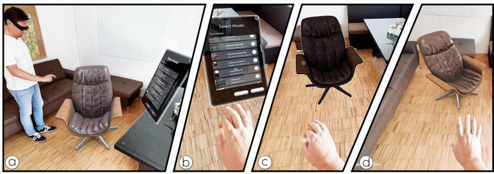

HandLight: Light Estimation from Hand Interaction in Mixed Reality
Journal paper in TVCG 2026

Abstract
Correctly estimating the surrounding illumination is essential for creating visually coherent Mixed Reality (MR) experiences. The most accurate results can be achieved by utilizing a light probe, a dedicated object with known reflectance parameters that is placed into the scene. However, the need for a dedicated object placed in the area where the illumination is estimated presents a severe limitation. Building on the increasing popularity of gestural interaction in MR, we present HandLight, an approach to estimating the illumination from the user's hands during interaction. Contrary to static light probes, HandLight does not require preparation of the environment and generates an atlas of light probes while the user moves in the world, thus reflecting variable illumination. Our system utilizes a neural network that learns the environment lighting from images of the hand. We train the network on a dataset depicting three common gestures (pinch, fist, bloom) under varying light conditions. We show that our approach can provide believable illumination estimations for a variety of illuminations on a dataset of real hand images.
Citation